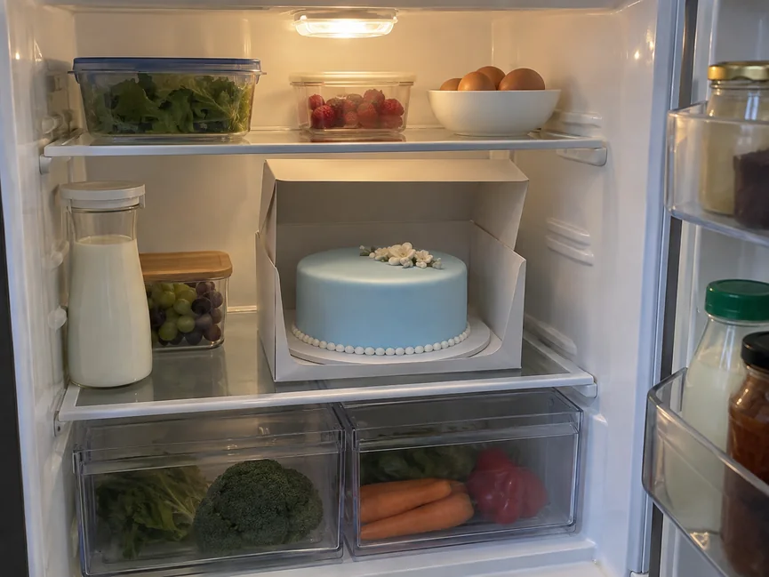
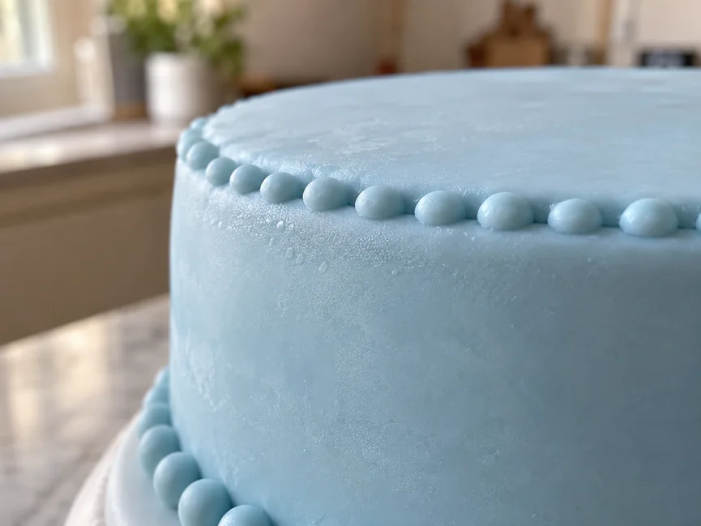

Готовий торт з мастикою потрібно зберігати так, щоб не постраждали ні начинка, ні саме покриття.
Головне правило просте: умови зберігання задає начинка. Якщо всередині вершковий крем, крем-чиз, мус, свіжі ягоди або інші швидкопсувні продукти, торт потрібно тримати в холодильнику. Мастика в цьому випадку вже підлаштовується під умови зберігання самого десерту.
Чи можна зберігати торт з мастикою в холодильнику
Можна, а в деяких випадках без холодильника взагалі не обійтися.
Якщо начинка потребує холоду, торт обов’язково ставлять у холодильник. Залишати його при кімнатній температурі лише заради того, щоб мастика не відсиріла, не можна.
Але сама мастика зайву вологу не любить. Після холодильника на поверхні може з’явитися конденсат, покриття стає блискучим і іноді липким.
Якщо начинка стабільна і не потребує обов’язкового охолодження, торт можна тримати в прохолодному сухому місці. Але все одно краще враховувати склад конкретного крему і мастики.
Важливо!
Якщо крем або начинка повинні зберігатися в холодильнику, весь торт теж відправляють у холод.
Коли холодильник обов’язковий
Холод потрібен, якщо в торті є:
- вершковий крем;
- крем-чиз;
- мус;
- сирний крем;
- свіжі ягоди або фрукти в прошарку;
- інші швидкопсувні начинки.
Для таких тортів холодильник — не питання зовнішнього вигляду, а нормальна умова зберігання.
Якщо ви готуєте десерт за конкретним рецептом, спочатку подивіться рекомендації саме до крему або начинки. За однією мастикою визначити строк і умови зберігання всього торта не можна.
Як правильно поставити торт з мастикою в холодильник
Найкраще прибрати торт у коробку відповідного розміру.
Вона захистить покриття від випадкових крапель, запахів інших продуктів і зайвої вологи. При цьому мастика не повинна торкатися кришки або стінок коробки.
Не ставте торт поруч із відкритими продуктами з сильним запахом. Погане місце і впритул біля задньої стінки холодильника, де іноді збирається конденсат.
Якщо торт уже прикрашений фігурками або іншим крихким декором, перевірте, щоб нічого не впиралося в коробку.
Порада!
Не відкривайте коробку без потреби. Чим менше холодний торт контактує з теплим повітрям, тим нижчий ризик появи вологи на поверхні.

Чому на мастиці з’являється конденсат
Найчастіше причина в різкому перепаді температури.
Холодний торт дістають із холодильника в теплу кімнату, і на його поверхні починає осідати волога з повітря. Спочатку мастика може просто заблищати, а потім на ній з’являються дрібні краплі.
Особливо помітно це влітку і в приміщеннях з високою вологістю.
Невеликий конденсат ще не означає, що покриття зіпсоване. Але в цей момент мастика стає більш ніжною, тому її легко пошкодити пальцями або серветкою.

Як правильно вийняти торт із холодильника
Не поспішайте одразу відкривати коробку.
Дістаньте торт із холодильника і дайте йому трохи постояти в упаковці. Так він буде нагріватися поступово, без надто різкого контакту з теплим вологим повітрям.
Якщо на мастиці все ж з’явилися краплі, не витирайте їх.
Залиште торт у спокої і дайте поверхні висохнути самостійно. На вологій мастиці легко залишаються відбитки, розводи і вм’ятини.
Строго не робіть!
Не сушіть мастику гарячим феном. Від сильного тепла покриття може розм’якнути, а крем під ним — втратити щільність.
Скільки зберігається торт з мастикою
Одного строку для всіх мастичних тортів немає.
Усе залежить від того, що знаходиться всередині:
- які коржі;
- який крем;
- чи є ягоди або фрукти;
- яка начинка;
- при якій температурі зберігається торт.
Сама мастика зазвичай не визначає строк придатності всього десерту.
Якщо всередині швидкопсувний крем, орієнтуйтеся саме на нього. Не варто розраховувати, що мастичне покриття якимось чином продовжить строк зберігання начинки.
Чим менше торт стоїть без потреби, тим краще зберігаються і його смак, і зовнішній вигляд.
Корисно знати!
Якщо ви не впевнені, скільки можна зберігати конкретний крем, перевірте рецепт або рекомендації до продуктів, які використовуєте.
Чи можна заморожувати торт з мастикою
Без потреби готовий мастичний торт краще не заморожувати.
Після розморожування на поверхні може з’явитися багато вологи. Мастика іноді стає липкою, розм’якшується або втрачає акуратний вигляд.
Крім того, морозильну камеру добре переносить далеко не кожна начинка.
Якщо торт усе ж потрібно заморозити, спочатку перевірте, чи допускають це і крем, і використана мастика.
Розморожувати такий десерт краще поступово, без різкого перенесення з морозилки одразу в теплу кімнату.
Як зберігати торт перед подачею
До подачі тримайте торт у тих умовах, які підходять його начинці.
Якщо він зберігається в холодильнику, не варто діставати його за багато годин до застілля. Особливо це важливо влітку, коли в кімнаті спекотно.
Не ставте торт:
- під прямі сонячні промені;
- біля батареї;
- поруч із плитою;
- на нагріте підвіконня.
Від тепла мастика стає м’якшою, а фігурки та інший об’ємний декор можуть почати втрачати форму.
Як зберігати торт перед перевезенням
Перед поїздкою торт краще добре охолодити, якщо це підходить його начинці.
Холодний крем щільніший, тому зібраний десерт зазвичай краще переносить дорогу.
Поставте торт на жорстку підкладку і приберіть у коробку. Вона повинна бути відповідного розміру, щоб торт не їздив усередині з боку в бік.
У машині коробку ставте тільки на рівну поверхню.
У спекотну погоду не залишайте торт надовго в закритому автомобілі. Якщо дорога буде довгою, а начинка швидкопсувна, постарайтеся зберегти холод протягом усього шляху.
Часті помилки при зберіганні
Більшість проблем виникає не через саму мастику, а через неправильно вибрані умови.
- Залишили торт у кімнаті, хоча начинка потребує холоду. Мастика може виглядати нормально, а крем усередині вже зберігається неправильно.
- Поставили торт у холодильник без коробки. Покриття сильніше контактує з вологим повітрям і запахами інших продуктів.
- Одразу відкрили холодний торт у теплій кімнаті. На мастиці швидше з’являється конденсат.
- Почали витирати краплі серветкою. Вологе покриття легко пошкодити, на ньому залишаються розводи і сліди.
- Заморозили торт, не перевіривши склад. Після розморожування може постраждати і мастика, і начинка.
- Визначили строк зберігання тільки за мастикою. У готовому торті орієнтуватися потрібно насамперед на крем і начинку.